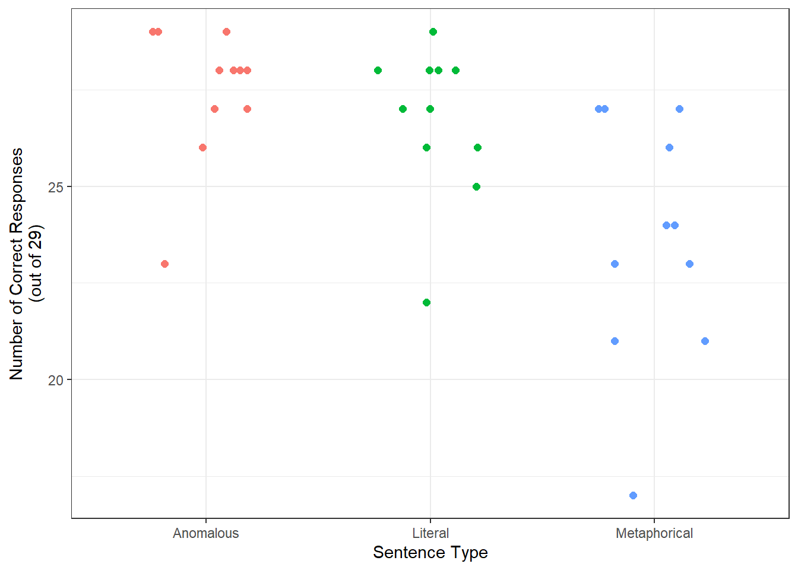

An ERP study on metaphorical language processing
Introduction
This is a study about metaphor using ERP methods.
Methods
Participants
11 Vassar students participated in this study.
Procedure
Read sentences. Record brainwaves.
EEG Recordings
Put electrodes on head. Voltages go brrrrrrr.
Results
Behavior
We checked for comprehension accuracy of the sentences by looking at the percent of “sensible” responses for each sentence type. Participants said the sentences made sense more in the literal (M = 92.16%, SD = 6.74%) and anomalous (M = 94.67%, SD = 6.04%) conditions than in the metaphorical condition (M = 81.5%, SD = 10.82%), suggesting that the metaphorical meanings were slightly more difficult to understand (see Figure 1 ).

ERP
We measured the amplitude of the ERP in the 300-500ms window at four electrode sites: F3, Fz, F4, and Cz. Figure 2 shows the grand average wave forms.
Is there a difference in N400 for different sentence types?
Effect DFn DFd F p p<.05 ges
2 condition 2 20 2.5643280 0.102001689 0.054443805
3 electrode 3 30 4.5657241 0.009472079 * 0.081915193
4 condition:electrode 6 60 0.8062955 0.569049857 0.009985573